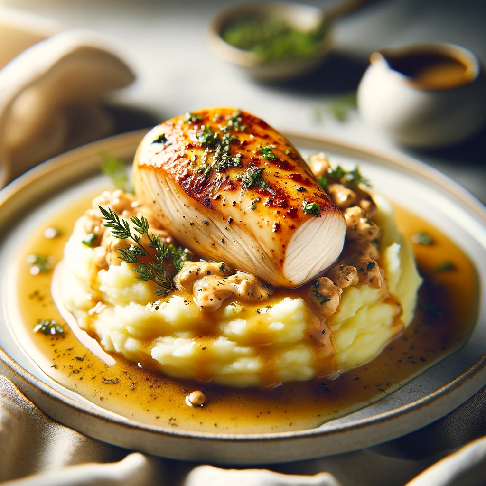

Mashed Potatoes with Roasted Chicken

Ingredients:
- For the Mashed Potatoes:
- 1 kg potatoes, peeled and quartered
- 1/2 cup milk
- 1/4 cup butter
- Salt and pepper to taste
- Fresh chives, chopped (for garnish)
- For the Roasted Chicken
- 4 chicken breasts, boneless and skinless
- 2 tbsp olive oil
- 1 tsp garlic powder
- 1 tsp paprika
- Salt and pepper to taste
- Fresh rosemary (optional)
Method:
- Prepare the Potatoes: Boil the potatoes in salted water until tender. Drain and return them to the pot. Add milk, butter, salt, and pepper. Mash until smooth and creamy. Keep warm.
- Season the Chicken: Preheat your oven to 200°C (390°F). Rub the chicken breasts with olive oil, garlic powder, paprika, salt, and pepper.
- Roast the Chicken: Place the chicken in a roasting pan. Add rosemary sprigs for extra flavor. Roast for 25-30 minutes or until the chicken is cooked through and golden.
- Serve: Slice the chicken and serve over the mashed potatoes. Garnish with chopped chives.
This dish strikes a perfect balance between the richness of the buttery mashed potatoes and the savory, herbed flavors of the roasted chicken. It's a meal that's both satisfying and elegantly simple, ideal for a family dinner or a cozy evening meal. Enjoy this timeless comfort food and let it warm your heart and your palate.
Back to main menu